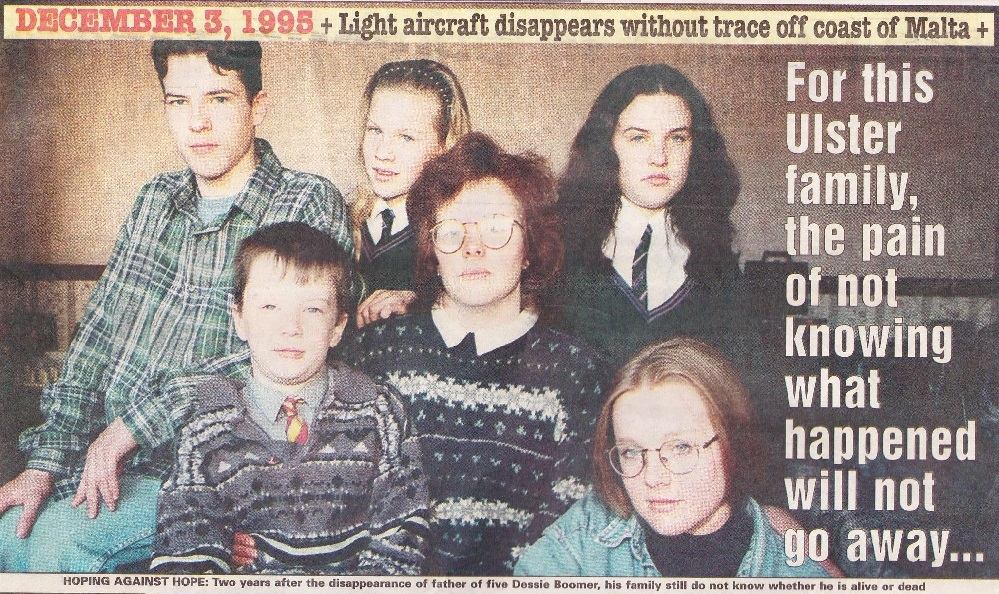
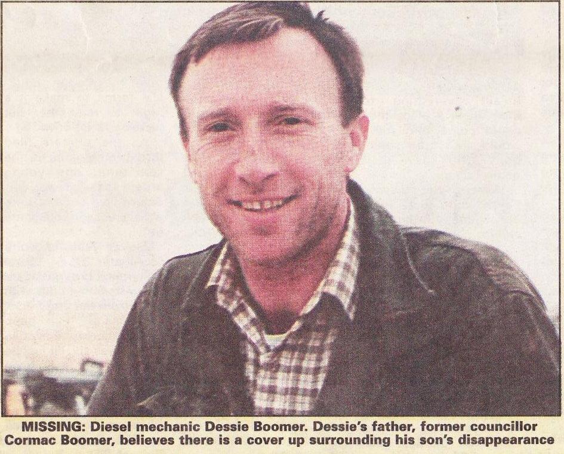
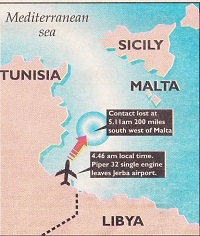

Article by Stephanie Bell, Sunday Life
BY STEPHANIE BELL
MANDY Boomer should be celebrating her 18th wedding anniversary today with her husband Dessie.
Instead, the Banbridge woman doesn't even know if the man she has loved since she was just 15-years-old is dead or alive.
Her husband, the son of former Belfast SDLP councillor Cormac Boomer, disappeared without trace while returning from work on a Libyan oil field in December 1995.
The father-of-five was on his way home for Christmas when the light aircraft he was travelling in failed to land in Malta.
An extensive search and an independent inquiry involving the Tunisian and Maltese governments have failed to unravel the mystery.
Mandy and her father-in-law have left no stone unturned in their attempts to find out what happened.
The 39-year-old diesel mechanic was one of six people on the plane making theshort flight from Tunisia to
DESSIE'S father — former SDLP councillor Cormac Boomer —— has amassed a huge file of evidence of his own on his son's disappearance.
Mr Boomer, who served on Belfast City Council, remains unconvinced that his son even boarded the plane, or that it took off.
"I have a thick file of evidence and nothing will convince me that the plane went down in the water," he told Sunday Life last night.
"The pilots wallet turns up supposedly after nine months in the sea and there are crisp US bank notes in it.
“I believe there is a cover up and I have been to Malta and had stand up rows with government officials over it.
"I can't even get the Tunisian govemment officials to talk to me, but I won't give up until the truth is known."

BY STEPHANIE BELL
MANDY Boomer should be celebrating her 18th wedding anniversary today with her husband Dessie.
Instead, the Banbridge woman doesn't even know if the man she has loved since she was just 15-years-old is dead or alive.
Her husband, the son of former Belfast SDLP councillor Cormac Boomer, disappeared without trace while returning from work on a Libyan oil field in December 1995.
The father-of-five was on his way home for Christmas when the light aircraft he was travelling in failed to land in Malta.
An extensive search and an independent inquiry involving the Tunisian and Maltese governments have failed to unravel the mystery.
Mandy and her father-in-law have left no stone unturned in their attempts to find out what happened.
The 39-year-old diesel mechanic was one of six people on the plane making theshort flight from Tunisia to
Malta after an overland journey from Libya.
The numbness with which Mandy first reacted to the news of her husband's disappearance soon thawed as the full reality of the nightmare struck home.
The agony of not knowing whether Dessie is dead or alive is something which she believes no one can fully appreciate.
The numbness with which Mandy first reacted to the news of her husband's disappearance soon thawed as the full reality of the nightmare struck home.
The agony of not knowing whether Dessie is dead or alive is something which she believes no one can fully appreciate.
But it is the lack of practical support and concern for her husband's disappearance which hurts Mandy most.
"Nobody can possibly know what it is like, and one of the worst bits for me is that nobody really cares,” said Mandy.
“The Irish government has tried to help us but even then we have to keep on and on at them.
"Nobody can possibly know what it is like, and one of the worst bits for me is that nobody really cares,” said Mandy.
“The Irish government has tried to help us but even then we have to keep on and on at them.
“It's just as if a local man — who was a loving father, a much loved son and husband can disappear without a trace and it doesn't matter."
Mandy cannot fully accept that her husband is dead.
Last September, a small section of aircraft wreckage and a wallet identified as the pilot's were recovered from the Mediterranean in a fisherman's nets.
Mandy cannot fully accept that her husband is dead.
Last September, a small section of aircraft wreckage and a wallet identified as the pilot's were recovered from the Mediterranean in a fisherman's nets.
Said Mandy: "We cannot get anyone to forensically examine the aircraft wreckage and confirm it came from the plane Dessie was in.
“Dessie's father travelled to Malta to see pictures of the wreckage and he was not convinced that it was the plane.
"It seems strange, with all the luggage on the plane, that it could go down in the water and nothing is uncovered
“Dessie's father travelled to Malta to see pictures of the wreckage and he was not convinced that it was the plane.
"It seems strange, with all the luggage on the plane, that it could go down in the water and nothing is uncovered
except a wallet.
"I don't know what the answer is. Everything has gone through my mind.
“I have even thought that Dessie could be being held in Libya.
“All I want is proof either way that he is dead or alive."
In her efforts to find out the truth, Mandy even traced the company who manufacture the plane in the US in the hope that it would send its own accident investigations officer to examine the wreckage, but again without success.
She has travelled to Malta twice in a bid to find out information and has befriended relatives there of others who were on the plane.
Her children, aged from nine years to 17, have each coped differently with their father's disappearance. Said Mandy: “The knock-on effect, both emotionally and psychologically, on all of us is massive.
“I think we have been treated very badly by the foreign governments involved and by our own government, which I believe, at the end of the day, does not really care.”
"I don't know what the answer is. Everything has gone through my mind.
“I have even thought that Dessie could be being held in Libya.
“All I want is proof either way that he is dead or alive."
In her efforts to find out the truth, Mandy even traced the company who manufacture the plane in the US in the hope that it would send its own accident investigations officer to examine the wreckage, but again without success.
She has travelled to Malta twice in a bid to find out information and has befriended relatives there of others who were on the plane.
Her children, aged from nine years to 17, have each coped differently with their father's disappearance. Said Mandy: “The knock-on effect, both emotionally and psychologically, on all of us is massive.
“I think we have been treated very badly by the foreign governments involved and by our own government, which I believe, at the end of the day, does not really care.”

Father claims a cover up
DESSIE'S father — former SDLP councillor Cormac Boomer —— has amassed a huge file of evidence of his own on his son's disappearance.
Mr Boomer, who served on Belfast City Council, remains unconvinced that his son even boarded the plane, or that it took off.
"I have a thick file of evidence and nothing will convince me that the plane went down in the water," he told Sunday Life last night.
"The pilots wallet turns up supposedly after nine months in the sea and there are crisp US bank notes in it.
“I believe there is a cover up and I have been to Malta and had stand up rows with government officials over it.
"I can't even get the Tunisian govemment officials to talk to me, but I won't give up until the truth is known."
